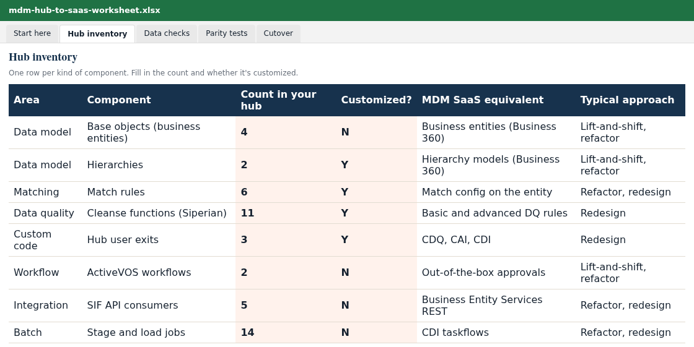

The Informatica MDM Hub to SaaS migration playbook.
Everything we check when we move an on-prem Multidomain MDM hub to Informatica MDM SaaS, in the order we check it. Read it here, or download the PDF and the inventory worksheet to work through with your team.

Get the playbook and the hub inventory worksheet
Who this is for
MDM owners, data architects and program leads running the on-prem Informatica MDM Hub (Multidomain MDM, often 10.4 or 10.5) who need to decide whether and how to move to MDM SaaS, and want to know what the work really involves before they budget for it.
It follows the approach Informatica's own support engineers describe for modernization1, plus what we've learned delivering MDM projects. Where Informatica's guidance applies to specific versions or may change, we say so.
In this playbook: 1. Decide · 2. Pick an approach per component · 3. Inventory the hub · 4. Prepare the data · 5. Prove parity · 6. Cut over
1. Decide what you're moving to
You have three options: stay on-prem for now, move to Informatica MDM SaaS, or switch to another MDM. Two questions settle most cases.
When does your version's support end? Check Informatica's Product Lifecycle Guide for your exact version and patch level. A support date is the most common reason a migration becomes urgent.
What would you have to rebuild? Moving to MDM SaaS keeps your data model, much of your match and survivorship logic, and your team's Informatica skills. Switching platforms rebuilds all of it. If you're being pitched to switch, price both paths side by side; our comparison page lists what to weigh.
Tip: ask your Informatica account team for the modernization Analysis Report. Informatica says it will evaluate your on-prem change list against SaaS capabilities, and the report is useful input for design1.
2. Pick an approach per component
Informatica describes three approaches1, and most migrations mix all three:
Lift-and-shift: mapped one-to-one to MDM SaaS. Refactor: the same business behavior, rebuilt with SaaS features and best practices. Redesign: rebuilt from scratch for SaaS.
Here is where the main hub components land, based on Informatica's mapping1. The full list of 26 components is in the worksheet.
Base objects, lookups, hierarchies, relationships
Business entities, Reference 360 code lists, and hierarchy and relationship models in the Business 360 application.
Match rules, trust and survivorship
Configured on the business entity. Your tuned rules encode business decisions: carry the decisions, then test on real duplicates.
Validation rules, IDQ rules, cleanse functions
Basic data quality rules on the business entity; advanced rules in Cloud Data Quality.
Address, email and phone validation
DaaS services for address, email and phone; other enrichment providers through Cloud Application Integration.
Hub and IDD user exits, external calls
Rebuilt with Cloud Data Quality, Cloud Application Integration and Cloud Data Integration. Usually the biggest single effort driver.
Workflows (Siperian, ActiveVOS)
Standard one- and two-step approvals come out of the box; custom workflows become Application Integration processes with human tasks.
SIF and BES integrations, JMS queues
Business Entity Services REST APIs; outbound queues become published business events, with streaming ingestion for real time.
Batch jobs and orchestration
Stage and load jobs become Cloud Data Integration taskflows; match, merge and index jobs become Business 360 Console job definitions; batch groups become REST calls.

3. Inventory the hub
Count what you have before anyone estimates anything. The effort depends far more on how much is customized than on how many records you hold.
- Base objects, lookups, hierarchies and relationship types
- Match rule sets and how heavily they've been tuned
- Validation rules, cleanse functions and IDQ mapplets
- Hub and Data Director user exits, and external calls
- Workflows, especially custom ActiveVOS processes
- Every system that writes to the hub, and every system that reads from it (and which of those are real time)
- Batch groups and whatever schedules them
The worksheet's Hub inventory tab lists each component, where to find it in the hub, and its SaaS equivalent. Fill in the counts and you have the inputs for an estimate.
4. Prepare the data
Run consistency checks first. Informatica lists two prerequisites1: base object records with no matching cross-reference row, and orphan child records whose parent is gone. Both break loads. The worksheet includes example SQL for each.
Finish the SaaS model before loading. The business entity model, including a logical attribute for every field you'll map, has to be complete before data moves.
Plan Business IDs. In MDM SaaS, an incoming record with an existing Business ID merges into that record and skips matching; a new Business ID creates a new record1. Decide how IDs are generated and what your downstream systems will key on.
Decide where history goes. As of February 2025, Informatica said history data can't currently be migrated to MDM SaaS and recommended keeping it in a data lake1. Find out who uses history today before you archive it.
Load in the right order. Code lists into Reference 360 first. Then extract from the on-prem cross-reference (XREF) tables and load root entities, then children, then grandchildren. Within each source system, load the winning records first, then the remaining active cross-references1.
Decide on enrichment during the load. With DaaS enrichment on, phone, address and email values change as they load; with it off, you get a straight copy. Pick one deliberately, because it affects parity testing.
5. Prove parity
Agree with the business what "the same result" means before the build starts, then measure it. For a national health insurer moving between MDM platforms, we seeded golden records so they matched exactly at cutover, so parity was shown rather than assumed.
- Golden record counts per entity and record type
- Cross-reference counts per source system
- Match outcomes on a sample of known duplicates and known non-duplicates
- Surviving values for key attributes on a sample of records
- Hierarchy and relationship counts
- What each consuming system receives for the same inputs
- Batch run times and API response times
6. Cut over
- Freeze configuration changes on the on-prem hub
- Run a final delta load and rerun the parity tests
- Switch consuming systems one at a time, then the sources
- Keep a tested rollback plan
- Train stewards on the new pages and tasks
- Keep the old hub read-only for an agreed period, then retire it and archive history
"A migration is the cheapest moment you'll ever have to retire the objects and rules nobody uses."
Want a cost and timeline for your hub? Fill in the worksheet's inventory and send it to us, or take the 5-minute questionnaire. We'll reply with a fixed-price estimate within 72 hours.
Common questions
Can we migrate MDM history tables to MDM SaaS?
As of Informatica's February 2025 guidance, history data can't currently be migrated, and Informatica recommends storing it in a data lake. Check with Informatica for your release.
Do our match rules carry over automatically?
No. Match and survivorship are configured again on the business entity, which Informatica classes as refactor or redesign. Keep the business decisions behind your rules and test them on real duplicates.
What usually takes the longest?
Custom code: hub and Data Director user exits, external calls and custom workflows. They are redesigned on SaaS, so count them early.
Does Informatica help with the assessment?
Informatica says it provides an Analysis Report that evaluates your on-prem change list against SaaS capabilities. Ask your account team to start it.
How long does a migration take?
It depends on the number of domains, the amount of custom code and the systems connected to the hub. Send us the completed worksheet or take the questionnaire, and we'll give you a timeline in weeks.
Sources
1. Informatica Global Customer Support, "MDM Modernization: Transitioning from On-Premises to SaaS", Tech Tuesdays webinar slides, 18 February 2025. success.informatica.com. Informatica notes its statements are informational and subject to change.
Informatica, Multidomain MDM, and MDM SaaS are trademarks of Informatica. ZCLAP is an independent consultancy.
Tell us about your project
For domain expansions, replacements and integrations, or anything you'd rather talk through first. An MDM consultant will reply.
Or use the 5-minute questionnaire for a written estimate.
Email us directly at info@zclap.com